Purchase journal
To record your credit purchases from your creditors (suppliers / vendors), you would need to use the Purchase journal. In this journal, you would enter details such as the supplier invoice number, date of the supplier invoice, creditor information, Input VAT/GST/Sales Tax (if applicable), and the amount (including or excluding VAT/GST/Sales Tax).
Overall, it is important to accurately record all supplier invoices received for credit purchases. You can choose to use either the Batch entry mode or the Document entry option to do this, depending on your preference and specific needs.
|
|
On the other hand, processing purchases in the Document entry option allows for a more streamlined and efficient process. This option allows you to create purchases using stock item types such as Financial entry (use the Accounts lookup to select general ledger accounts) and Purchases (no stock) stock items. purchases created in this way are automatically linked to the Purchase journal in the Setup → Documents setup for Purchases on the Setup ribbon. When you post or update these purchase documents to the ledger, it will automatically process the transactions in the Purchase journal. The benefits of using the Document entry option include improved accuracy and speed of data entry, as well as the ability to easily track and manage purchases in the system. Additionally, purchases created through Document entry can be easily edited, or adjusted and reprinted if necessary. Some additional benefits of processing purchase transactions, in the purchases document type:
Overall, the recommended approach is to use the Document entry option for creating invoices whenever possible, as it provides a more efficient and accurate way of managing sales transactions in osFinancials5. |

The purchase journal is not used to keep track of inventory or stock. The purchase journal is a record of all credit purchases made by a business, including information about the supplier, date of purchase, supplier invoice number, and amount of the purchase. It is used to keep track of the purchases made by the business.
|
|
To keep track of stock or inventory, osFinancials uses the stock (inventory) management system. This system would track the quantities of each product or item in stock, as well as any incoming or outgoing inventory transactions, such as purchases, returns, or sales. By tracking inventory separately, a business can ensure that it always has enough stock to meet customer demand, avoid stockouts or overstocking, and manage its supply chain effectively. In addition to process purchases in the Document entry option to create purchase using stock item types such as Financial entry (use the Accounts lookup to select general ledger accounts) and Purchases (no stock) stock items, the following stock item types may be selected to process Purchase documents:
These stock item types selected when processing invoices, will write up the sales journal and update your stock (inventory). This would track the quantities of each product or item in stock, as well as any incoming or outgoing inventory transactions, such as purchases, returns, or sales. By tracking inventory separately, a business can ensure that it always has enough stock to meet customer demand, avoid stock-outs or overstocking, and manage its supply chain effectively. Purchases created in this way are automatically linked to the Purchase journal in the Setup → Documents setup for Purchases on the Setup ribbon. When you post or update these purchases to the ledger, it will automatically process the transactions in the Sales journal. |
Source documents - Supplier invoices
Capture the following supplier invoices in the Purchase journal:
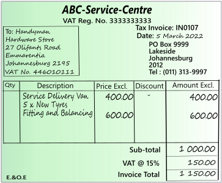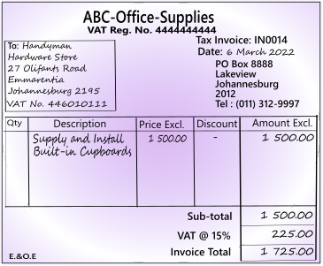
|
|
Using the Document entry, Purchases may be printed by osFinancials, which will generate similar transactions as the Batch entry in the Purchase journal. |
Capture your Supplier invoices in the Purchases journal
To enter your purchase transactions in the purchase journal:
- On the Default ribbon, select Batch entry (F2).
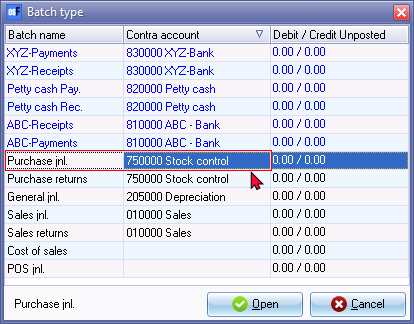
|
|
If no contra account is displayed on the "Batch type" selection screen, you need to set up the options for the batch. If you have not yet set the Purchase journal, or if your requirements should change, click on the F10:Setup icon. |
- Select the “Purchase jnl” and click on the Open button.
- Enter the Alias (batch name) and press the Enter key.
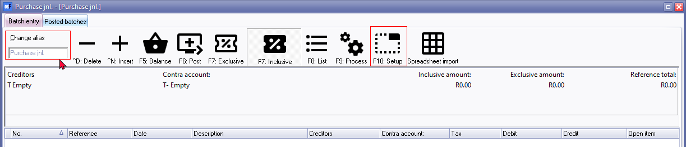
|
|
The Alias (Batch name) will help you if you need to identify a specific batch, to print a batch type report, if you wish to export posted batches to a file, etc. The alias (batch name) will also make it easier to identify the specific transactions in reports and various screens, and exported data. |
- Click F10:Setup to set the "Options for this batch". On the Standard tab, check the settings, and change, as required.
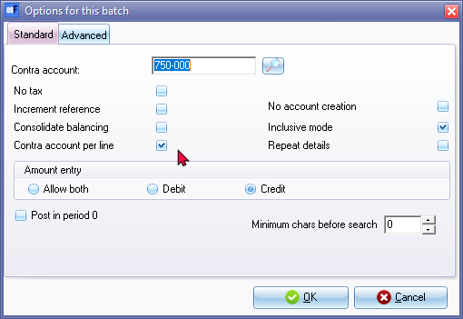
|
|
Contra account per line -Select (tick) this option, each time you select a creditor account, you to also need to select a ledger account for each purchase. In this way you can select a different contra account for each transaction. When you balance the batch, osFinancials will generate all the transactions to each of these contra accounts. |
|
|
Note that for Purchase or Supplier Invoices, the "Amount entry" field should be set to Credit. |

|
|
If you have a few supplier credit notes, you may enter a negative (minus sign), followed by the amount in the credit column. These amounts will be transferred to the debit column. |
|
|
If you have many supplier credit notes to capture, you need to set the amount entry to debit in the setup options for the Purchase journal, before entering supplier credit notes in the Purchase journal. Alternatively, you may enter the supplier credit notes in the Purchase returns journal. |
On the Advanced tab and check and take note of the settings.
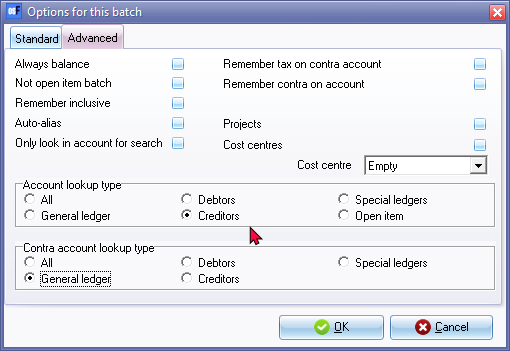
|
|
Select the “Creditor” option for the "Account lookup type", since you only need to select “Creditor” accounts when you enter transactions for purchases on credit to creditors (suppliers / vendors) only. |
|
|
Set the “Contra account lookup type” to “General ledger”, since you need to select the ledger account for each purchase. When you balance the batch, osFinancials will generate balancing transactions for each of these contra accounts to the general ledger accounts |
- Once set up; click on the OK button.
- Capture the following supplier invoices in the Purchase journal:
- Enter and/or select the following:
- Reference - Enter the purchase or other applicable number you allocate to the supplier invoice.
- Date - Enter or select the date of the transaction.
- Description - Enter a brief description for the transaction.
- Account - Select the Creditor account.
- Contra account - Select the account to be debited with the credit purchase (expense or asset).
- Tax - Select the applicable Input Tax account for the expense or purchase.
|
|
This is only applicable if Input VAT/GST/Sales Tax is allowed on a transaction, and if you are registered as a VAT/GST/Sales Tax Vendor. If no VAT/GST/Sales Tax is applicable to the transaction, select the "Empty" option as the "No Tax" code. |

|
|
You may also select to hide the Tax column, and lookup facility in the Setup Options for the Purchase journal, if no VAT/GST/Sales Tax is applicable to all transactions in this batch; or if you are not registered as a VAT/GST/Sales Tax Vendor. |
- Amount - Enter the amount of the transaction (Inclusive or Exclusive of VAT/GST/Sales Tax) in the Credit amount column.
- After entering the supplier invoices in the Purchase journal, the transactions will be displayed as follows:
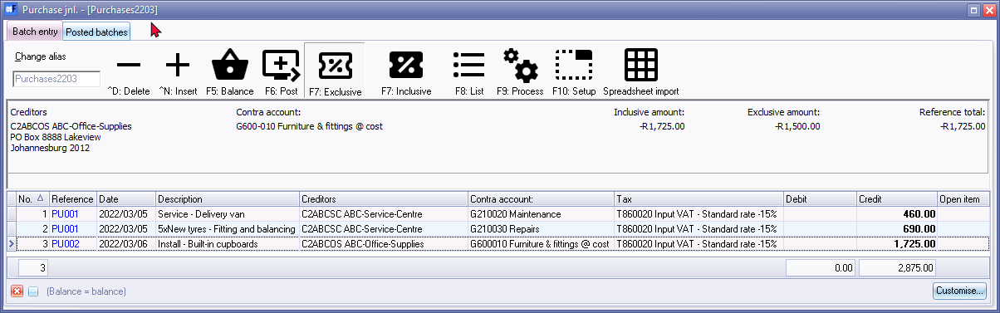
Finalising the Purchase journal
Once you have completed entering these invoices, and you are sure they are correct, you may proceed to finalise the batch. The recommended process, consists of the following steps:
- Balance the transactions entered in the purchase journal.
- Print a list the transactions in the purchase journal (after the journal is balanced).
- Post the transactions in the purchase journal to the ledger.
Balance the Purchase journal
Balancing the transactions entered in the purchase journal before posting to the ledger is an important step in maintaining accurate financial records for a business. Here are some reasons why:
- Accuracy: Balancing the transactions in the sales journal helps to ensure that the total debits and total credits are equal, which is the basic principle of double-entry accounting. This helps to minimize the risk of errors or discrepancies in the financial records.
- Efficiency: Balancing the purchase journal before posting to the ledger can help to streamline the posting process by ensuring that all necessary information is complete and accurate. This can help to reduce the time and effort required to correct any errors or discrepancies that may arise later.
- Compliance: Balancing the transactions in the purchase journal is a standard accounting practice and is often required by accounting regulations and standards. This can help to ensure compliance with legal and regulatory requirements.
- Verification: Balancing the transactions in the purchase journal provides an opportunity to review and verify the accuracy of the recorded transactions. This can help to catch any errors or discrepancies that may have been made during the recording process.
Overall, balancing the transactions in a purchase journal before posting to the ledger is an essential step in maintaining accurate financial records and ensuring compliance with accounting regulations and standards.
To balance the transactions entered in the purchase journal:
Click on the F5:Balance icon. osFinancials will generate balancing entries. The balancing entries should reflect as follows:
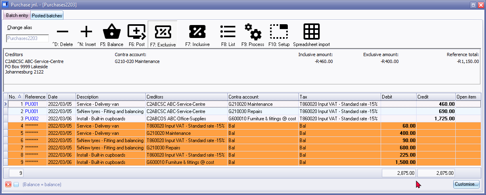
List the transactions in the Purchase journal
Printing a list of transactions in a purchase journal before posting to the ledger can be an important step in ensuring accurate financial records for a business. Here are some reasons why:
- Verification: Printing a list of transactions in the purchase journal provides an opportunity to review and verify the accuracy of the recorded transactions before they are posted to the ledger. This helps to catch any errors or discrepancies that may have been made during the recording process. If you find any errors or discrepancies, you can make the necessary corrections in the sales journal before posting the transactions to the ledger. This can help ensure that the financial records are accurate and up-to-date, which is important for making informed business decisions.
- Organisation: Printing a list of transactions in the purchase journal can help to organize and keep track of all the transactions that have been recorded. This can be useful in case there are any questions or disputes that arise regarding specific transactions.
- Audit trail: Printing a list of transactions in the purchase journal can help to create an audit trail that can be used to track the flow of transactions from the source documents (such as sales invoices) to the ledger. This can be important for both internal and external audits.
- Reference: Printing a list of transactions in the purchase journal can serve as a reference for future use. For example, if a customer calls with a question about a transaction, the purchase journal can be used to quickly locate and review the relevant information.
Overall, printing a list of transactions in a purchase journal before posting to the ledger can help to ensure accurate and organized financial records, which is important for the success and stability of any business.
To print a list of the transactions in the purchase journal:
Click on the F8:List icon to print a list of the transactions in the purchase journal.

|
|
It is a good idea to list the batch, and check the entries on the batch thoroughly. If there are any errors, you may edit the batch, before posting the batch. |
Post the Sales journal to the Ledger
Click on the F6:Post icon, to post (update) the purchase journal to the ledger.
Posting transactions from a sales journal to the ledger is an important accounting process that helps to ensure accurate financial reporting for a company. When these transactions are posted to the ledger, several things happen:
- The accounts affected by the transactions are updated: Each transaction in the purchase journal represents a sale made by the company. When these transactions are posted to the ledger, the accounts affected by the sale, such as revenue or accounts receivable, are updated with the appropriate amounts.
- The ledger provides a complete record of transactions: By posting the transactions from the purchase journal to the ledger, the ledger provides a complete record of all sales made by the company during the period. This information can be used to prepare financial statements and to analyze the company's financial performance.
- The accuracy of financial information is improved: Posting transactions to the ledger helps to ensure the accuracy of financial information. By keeping a complete and accurate record of all sales, the company can track its revenue and make informed business decisions based on the financial information.
- Adjusting entries can be made: Sometimes, errors are made in the sales journal that need to be corrected. When transactions are posted to the ledger, adjusting entries can be made to correct these errors and ensure the accuracy of the financial information.
In summary, posting transactions from a sales journal to the ledger is a crucial step in the accounting process. It helps to ensure the accuracy of financial information, provides a complete record of transactions, and allows for the preparation of financial statements that can be used to analyze the company's financial performance.
T-Account view
All processed (posted) transactions will be accumulated in the Ledger analyser. There are various ways in which the transactions may be viewed, exported and analysed.
Click on the F6:Post icon, to post (update) the batch to the ledger.
|
|
It is not necessary to post (update) the transactions at the end of each day. You may add and/or post the transactions on a daily, or weekly basis, or at the end of a month. When you have entered a few transactions, you may close or exit the batch. The data will not be lost. |
T-Account view
All processed (posted) transactions will be accumulated in the Ledger analyser. There are various ways in which the transactions may be viewed, printed, exported and analysed.
To access the T-Account view of the transactions:
- On the Reports ribbon, select Ledger analyser1 or Ledger analyser 2.
- Select “Trial balance” report type and click on the Report button.
- On the “Trial balance”, select the “Creditors control” account.
- Click on the following to get specific views of transactions:
- Batch number (e.g. 10030 automatically generated). This will list only the transactions for a specific batch (journal).
- Account code (e.g. G210-020 Maintenance, G210-030 Repairs, G610-010 Furniture & fittings, T850-020 Input VAT/GST/Sales Tax-Standard rate, C000-005 ABC-Office Supplies, C000-006 ABC-Service Centre). This will list the transactions for a specific account.
- Date – This will list the transactions for a specific date. If you double-click on a date, the “From date” and “To date” will be changed to the selected date.
After posting the transactions in the Purchase journal, the transactions should display as follows in the T-Account viewer:
Batch View

|
Account view Accounts in the Creditor’s ledger: ABC-Service-Centre 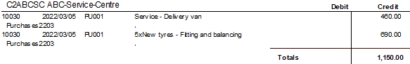 ABC-Office-Supplies 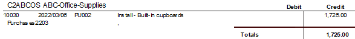 Accounts in the General ledger:
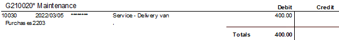
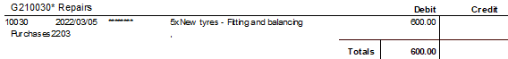 Furniture & fittings @ cost 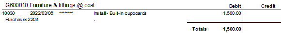 Input Tax – Standard rate – 15 % 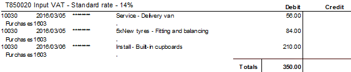
|

|
Accounting equation
Debits = Credits Debit General ledger (i.e. Purchases (Assets) + = Credit Creditor's ledger (i.e. individual Creditor accounts). |